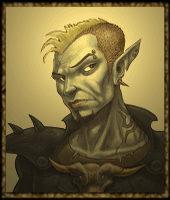
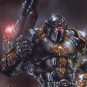
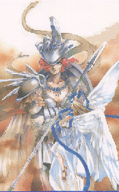

Forums galactiques > Taverne galactique : lieu de discussion informel > Le retour de la croisade
Pages : 1 2
| Grabeuh Réputation à la taverne : 1675  02/09 ETU 16:20  | Score : 1 Détails "Depuis qu'Arigliano et ses compères croisés sont partis, les boulets pullulent de plus en plus vite.
Je propose de remettre en place la croisade anti-boulets. Il est d'une importance primordiale que nous rasions le nom de boulet de la galaxie ! " Grabeuh sort rapidement de la salle et rentre à nouveau, déguisé en Jeanne-d'Arc. "J'ai entendu la voie du seingeur, et il m'a dit que nous devions bouter les boulets hors d'Origine ! La croisade DOIT repartir ! ! ! ! ! ! ! ! ! ! ! ! !" | ||
| galactor Réputation à la taverne : 307  02/09 ETU 16:26 | Score : 0 Détails J'enfile mon costume de croisé dans la minute qui vient et je part avec vous mon ptit grabeuh, parce que la y'en a marre!!
Euh il nous faudrait un hymne, pour chaque disparition d'un boulet :) | ||
| Skort av Zum Réputation à la taverne : 6 02/09 ETU 16:26 | Score : 0 Détails Cela n'est pas un peu succès comme croisade?
D'ailleurs certains réagissent comme des boulets alors qu'ils veulent les tuer. Allez soyez sympas, les boulets aussi ont le droit à une deuxième chance. /*/*/*/*/*/*/*/*/ C'était un message de l'ABP (aide aux boulets persécutés) | ||
| Grabeuh Réputation à la taverne : 1675 02/09 ETU 16:36 | Score : 0 Détails "Les boulets ont droit à une deuxième chance, mais lorsqu'ils viennent d'épuiser leur trentième chance, là on ne peut pas laisser passer..."
Des personnes comme Tayo qui en sont à leur sixième ou septième message à la poubelle et qui continuent de faire comme si de rien n'était, je trouve cela un peu... lamentable... Tout ça pour dire que ceux qui veulent me suivre me contactent par MP, les boulets classés "nuisibles" seront éliminés ! A cas extrème, solutions extrèmes... | ||
| Naar Réputation à la taverne : 6  02/09 ETU 18:39 | Score : 1 Détails HRP :
je songe a enfiler mon beau costume de croisé bien repassé... Expéditeur Naar Destinataire tayo Date d'envoi 02/09 ETU 11:50 Sujet HRP notation Message coucou mon p'tit gars, tu peux m'expliquer la raison de ton vote "présentation baclée" ? Expéditeur tayo Destinataire Naar Date d'envoi 02/09 ETU 11:53 Sujet Re: HRP notation Message faire chier lmes commandant puissant De la bonne graine de boulets... Si Dieu passe par là... | ||
| Grabeuh Réputation à la taverne : 1675 03/09 ETU 17:06 | Score : 0 Détails Desormais, je propose de mettre une liste au marché, ainsi que des mises à prix pour les têtes des boulets principaux. Comme ça tout le monde pourra participer.
Eh puis, ca motivera peut-être certains commandants à soit s'impliquer un peu dans le nettoyage d'Origine, soit à stopper leurs gamineries bouletiennes... | ||
| Kuny Réputation à la taverne : 111 03/09 ETU 20:33 | Score : 2 Détails Ce système n'est pas fiable, des gens pourraient être tués parce qu'Untel l'a présenté comme étant un "boulet". De plus, tuer quelqu'un parce qu'il fait des fautes ou parce qu'il ressort des vieux topics est complètement con.
Des gens appréciés disent la même chose que des prétendus boulets et reçoivent pourtant des éloges. Et puis nous n'avons pas tous la même définition du mot "boulet" ... | ||
| Grabeuh Réputation à la taverne : 1675 04/09 ETU 00:22 | Score : 0 Détails Nous n'avons effectivement pas tous la même définition du mot "boulet", par contre, vous en êtes le parfait exemple...
* Vote négatifs parce que le contenu du post (et non pas la forme, alors que c'est ça qui est jugé) déplait. On ne vote pas à grands coups de -1 pour un message parce ce qu'il y a de marqué dedans ne nous plait pas, on juge l'orthographe et la cohérence par rapport aux messages précédents (ceci vous concerne) * monoligne à outrance : quand on parle, on essaye de faire un peu plus que "pronom verbe complément". On est des gens à peu près civilisés, "Nous parler Francais, pas parler Tarzan" (ne vous concerne pas) * Langage SMS "je s8 sur ke n1port ki ora du mal a lir ca, mwa le 1er é sa me fé ch.é 2 2voar lir dé truk kom sa" (ne vous concerne pas non plus) * violence verbale gratuite ( citation pour l'annonce du départ du Normand "Adieu, je ne vous ai jamais aimé."... ca fait toujours plaisir...) *99,99% des messages inutiles ou hors contexte. (je pense que ce topic a une chance incroyable, nous sommes tombés sur le 0.01 % utile et dans le contexte) Enfin, j'en passe et des meilleures. Ah, excusez moi, Kuny... Vous disiez ? | ||
| Kuny Réputation à la taverne : 111 04/09 ETU 12:03 | Score : 7 Détails [HRP ON]
Tiens c'est dommage je pourrais te voter plein de -1 mais malheureusement je n'ai qu'un vote. Tu sais bien que mon seul plaisir est de voter négativement aux messages des commandants... "Votes négatifs parce que le contenu du post (et non pas la forme, alors que c'est ça qui est jugé) déplaît.On ne vote pas à grands coups de -1 pour un message parce ce qu'il y a de marqué dedans ne nous plaît pas, on juge l'orthographe et la cohérence par rapport aux messages précédents (ceci vous concerne)" Ah ok c'est pour ça qu'il y a 13 votes différents... Mais bon puisque vous le dites je m'en vais vous voter un -1 pour votre aggression, qui n'a rien à voir avec le topic. "Violence verbale gratuite ( citation pour l'annonce du départ du Normand "Adieu, je ne vous ai jamais aimé."... ça fait toujours plaisir...)" La vérité n'a jamais été à la mode. Tant pis si elle ne te plaît pas. Et puis qui est le plus violent entre celui qui traite les autres de "boulet" et celui qui dit à quelqu'un qu'il ne l'a jamais aimé ? "99,99% des messages inutiles ou hors contexte. (je pense que ce topic a une chance incroyable, nous sommes tombés sur le 0.01 % utile et dans le contexte)" Tu te bases sur quoi pour dire ça ? Je constate qu'on ne peut pas exprimer son opinion sans être aggressé... A quand la prise de planètes ? Tu arrives à combiner hors contexte, hrp, fautes d'orthographe, insultes et conneries en un seul post. Alors qui est le boulet ? EDIT : J'ai corrigé tes fautes, comme ça tu pourras éditer ton message et dire que ce que je dis est infondé :) [HRP OFF] | ||
| Iranna av Vikern Réputation à la taverne : 15  04/09 ETU 13:16 | Score : 1 Détails Ecoutez, Kuny, vous n'êtes peut-être pas pour cette croisade anti-boulet, mais vu la façon dont vous répondez, je pense qu'on se passera de votre avis. Et puis ne nous prenez pas pour des tueurs sans cervelle. Les gens ne serons éliminés qu'une fois qu'ils auront prouvé leur appartenance à l'engeance boulette.
Vive la croisade! A mort les boulets! | ||
| galactor Réputation à la taverne : 307 04/09 ETU 13:47 | Score : 0 Détails Et toc ^^!!
Prends ça dans ta ****** ! Bon je sais plus ce que j'ai fais de mon costume, mais je vais le retrouver sous peu.Y'en a besoin pour quand? | ||
| L'Archange Nathaniel Réputation à la taverne : 131  04/09 ETU 14:35 | Score : 0 Détails arf grabeuh j'avais deja repris la croisade anti boulet ;)
tien voila ma liste (y me reste plus qu'un seul boulet a finir) gohanssj2 tayo (mort) | ||
| Cassandra Réputation à la taverne : 316  04/09 ETU 18:46 | Score : 3 Détails Cassandra fut horrifier de voir un tel sacrilège Elle ne pue laisser passer ça :
Non mais vous n'avez tout de même pas l'intention d'égaler les Parrains pour votre pseudo Croisade Anti-boulets A vous voir, on dirait réellement des boulets définition Arigliano et Kimimagio. Je vous rappelle qu'en trois semaines ils ont nettoyé la Galaxie de plus de 20 boulets (dont je crois environ 6 MG). Vous vous sentez de faire pareil De plus, la Croisade avait une âme que lui donnait les Parrains. Là, c'est rien. Vous ne faites qu'hurler. La plupart du temps, Arigliano arrivait, il notait un nom sur son datapad et peu de temps après, on n'en entendait plus parler. Pas besoin d'en faire une montagne comme vous le faites. J'espère que vous cesserez de souiller cette Croisade. Les Parrains sont partis donc ceci est bel et bien FINI. Vous êtes longs à la détente. Pour ceux qui veulent néanmoins s'informer sur la VRAIE Croisade et ses objectifs REELS, voici le lieu de l'Assemblée où on peut trouver sa description: http://www.apocalypsis.org/0/assemblee/viewtopic.php?id=2641&forumpage=10 | ||
| Thanatos Réputation à la taverne : 243 04/09 ETU 18:56 | Score : 2 Détails Sans vouloir plus vous horrifier cher Cassandra, voulez vous qu'on passe à la croisade anti-Résistance pour éviter d'interférer sur la croisade anti-boulet qu'avait, à juste titre, entreprise la Famiglia ?
Si cela vous satisfait, nous n'y voyons pas d'objection ... | ||
| Laura Lee Réputation à la taverne : 293  04/09 ETU 18:56 | Score : 0 Détails Au dernières nouvelles, c'était 8 comptes.
Plus ceux qu'on connaissait pas... Et il ne faut pas qu'un projet s'effrite parce que son créateur s'est éteint (sinon l'empire des sens aurait sombrer dans les archives du forum...) | ||
| Kuny Réputation à la taverne : 111 04/09 ETU 21:03 | Score : 2 Détails Si le créateur meurt, soit le projet le suit soit il est repris par un successeur digne de le reprendre. Et, sans vouloir vous vexer ou quoi que ce soit de tel, il n'y a pour l'instant personne ayant l'étoffe d'un Arigliano...
"Ecoutez, Kuny, vous n'êtes peut-être pas pour cette croisade anti-boulet, mais vu la façon dont vous répondez, je pense qu'on se passera de votre avis. Et puis ne nous prenez pas pour des tueurs sans cervelle. Les gens ne serons éliminés qu'une fois qu'ils auront prouvé leur appartenance à l'engeance boulette." Vu commment je réponds ? Je réponds comment ? Franchement à part avancer des arguments que je trouve pertinents je ne vois pas ce qu'il y a de spécial dans ma réponse. Et j'aimerais bien avoir une réponse au mp que je vous ai envoyé, sans quoi votre intervention n'aura servi à rien, si ce n'est à prendre la défense de Grabeuh. | ||
| Cosmo Cat Réputation à la taverne : 72 06/09 ETU 07:46 | Score : 10 Détails Cosmo Cat avait mit sa cagoule et sa cape noir, il arriva avec une torche en feu dans la salle. Il la balaya du regard puis dit :
"LA ! Une sorcière! Suppôt de Satan, honte a toi créature maléfique. Nous nettoierons notre galaxie de ta présence en te purifiant par le feu. AU BUCHER !!!" Il se dirigea avec ses partisans équipés de fourches vers la sorcière. Alors qu'il allait lui cracher dessus, il reconnut son visage qui lui était familier, il dit alors : "Heu désolé cher grabeuh, je ne vous avez pas reconnu avec votre costume de jeanne d'arc... Très réussi par ailleurs, la coupe au bol vous va très bien. Vous m'excuserez j'ai voulu agir un peu trop vite et je vous ai prit pour quelqu'un d'autre. Héhé… Ca arrive aux meilleurs n’est-ce pas ?" Cosmo Cat fut attiré par un personnage étrange au fond de la salle. Il s'interrompit regarda dans le noir et hurla : "La !! Un BOULET !!!" Il se rua vers l'ombre suspecte et se jeta dessus. En grand fracas se fit entendre, ce n'était qu'un porte manteau. Cosmo cat se releva et partit un sourire aux lèvres en disant: "Je me suis encore trompé, ne m'en voulez pas..." | ||
| Janus-Jana Réputation à la taverne : 836  06/09 ETU 11:28 | Score : 2 Détails ***
Cassandra, Il n'est ici nullement question de succession, de réutilisation de l'héritage de la Famiglia, mais d'un problème bien plus important et simple : l'hygiène et la propreté galactique. La croisade anti-boulets, la chasse aux débiles légers ou aux séniles nous permet de compenser l'absence relative de Dieu. Laissez Grabeuh le faire, cela est nécessaire, sinon nous mourrons tous boulet au pied ! *** | ||
| Horlbar Réputation à la taverne : 142  06/09 ETU 16:40 | Score : 0 Détails Arrivé peu après, Horlbar s'informa des discussions en cours, puis prit la parole :
"La disparition de la Famiglia est à mon sens une chose regrettable, j'avais trouvé en Arigliano Arguello quelqu'un de compétent, et j'étais globalement d'accord avec lui. Quant à la croisade, commandante Cassandra, je me sens obligé de vous contredire... Combattre les déchets de cette galaxie doit être considéré comme un devoir ! Sachez donc que je soutiens le commandant Grabeuh dans son entreprise." Puis il détourna la tête pour s'adresser à Kuny plus particulièrement : "Commandant, je crois que le jugement du commandant Grabeuh est fiable, d'autant qu'il ne sera pas seul à prendre des décisions..." HRP : Bon, j'ai modéré mes propos, mais Kuny, tu t'échauffes très/trop vite, je trouve... Je préciserai aussi que c'est dans cette galaxie que je me suis inscrit parce qu'on m'a dit qu'il fallait remonter le niveau du RP, donc je suis là pour faire du RP, alors les boulets, merci, hein... Grabeuh a créé un sujet auquel on est censé répondre en RP (et je le félicite pour tout ce qu'il fait), et j'apprécie très peu qu'on lui réponde en HRP de façon agressive et grossière. Je regrette déjà la Famiglia... | ||
| athéna Réputation à la taverne : 97  06/09 ETU 16:57 | Score : 0 Détails il y a des gens don le RP peut-être impulsif,
Arigliano n'étai pas réputer pour son calme et sa bienveilance. Voila je di ça pour que Kuny utilise du "RP" dans son impulsivité. Je croi que vous êtes passez à côté de l'argument de Cassandra. Lutté contre les boulets si vous vouler, mais elle vous a montrer quel sacrilège c'était de reprendre la Croisade d'Arigliano et de Kimimagio sans avoir les moyens de l'égaler. Par exemple, la liste des boulets de l'archange fai peur: il y a deux noms *soupir* En plus, c'est rigolo, la plupart des Croisés agissent selon les méthode que les Parrains avaient défini comme caractéristique du "boulet". cassandra ne reprochait pas la lutte mais la manière de la mener. Il faut dire que faire une vraie croisade digne de celle des Parrains avec ces effectifs, c'est pas gagner. hrp: tout ça pour dire que si vous vouler vraiment remonté le RP, il faut essayé d'être original. Egaler la Croisade version originale en la plagiant, c'est impossible. La Famiglia manque pas mal à Origine à ce que je voie. |
Pages : 1 2
Forums galactiques > Taverne galactique : lieu de discussion informel > Le retour de la croisade